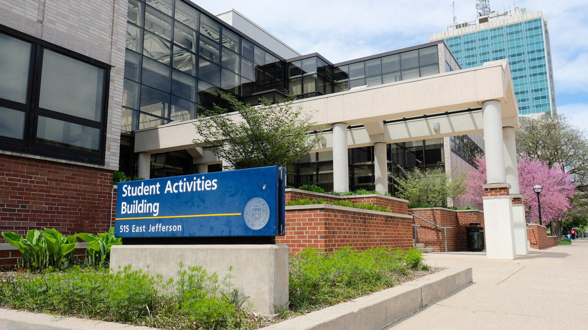

AM I A FIRST-GENERATION COLLEGE STUDENT?
At the University of Michigan, we welcome and encourage students from all different types of backgrounds, including first-generation students. Students are considered first generation college students if neither parent nor guardian has received a 4 year college or university degree.
This is not to be confused with being a first generation immigrant, which are individuals who are foreign-born and have become naturalized citizens, permanent residents, temporary residents, or migrants. That said, this term is disputed, as some sources consider individuals born to at least one foreign born parent as first generation.
FIRST-GENERATION GATEWAY HOURS & LOCATION
The First Generation Student Gateway is here to support you! This serves as a place where first-generation students can get connected to resources.
Summer Hours: Monday - Friday, 9:00am - 3:00pm
Location: Third floor of the Student Activities Building in the Office of Academic Multicultural Initiatives.
Email:firstgeninfo@umich.edu
Phone 734-936-1055
DID YOU KNOW?
There are currently more than 4,000 first-generation students at the University of Michigan. Although it may seem intimidating, know that you are not alone. There are networks and programs here at the university that are here to help you succeed.